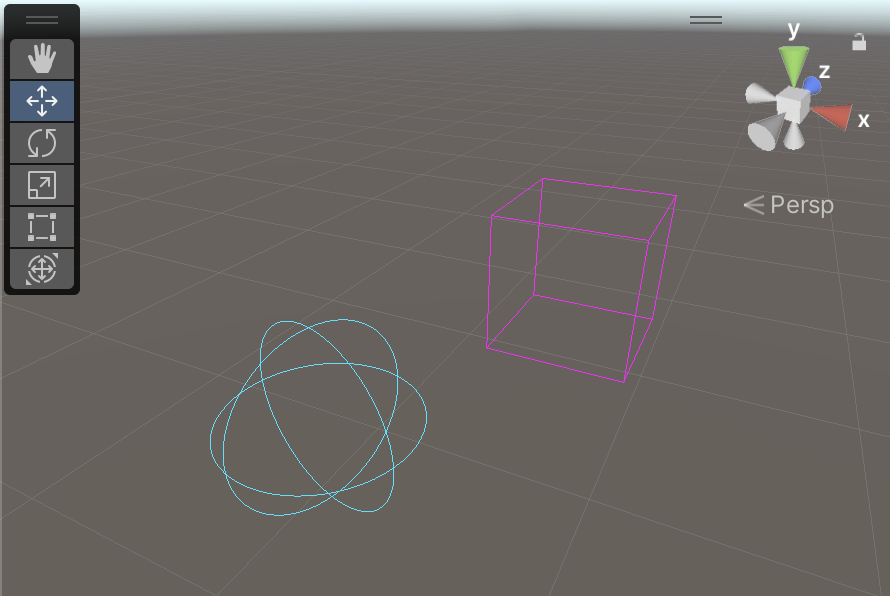
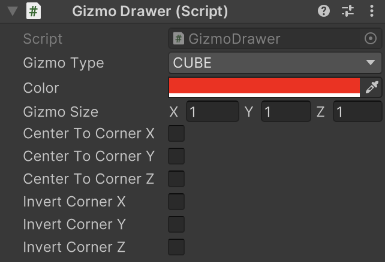

GizmoDrawer
オブジェクト非選択時にも SceneView にギズモを表示します。
namespace GarageKit
public class GizmoDrawer : MonoBehaviour
Inheritance
GizmoDrawer -> MonoBehaviour
Inspector
Properties
| member | type | description |
|---|---|---|
| gizmoType | GIZMO_TYPE | ギズモ表示タイプ |
| color | Color | ギズモ表示カラー |
| gizmoSize | Vector3 | ギズモ表示サイズ（SPHERE の場合は X のみ有効） |
| centerToCornerX | bool | X 軸位置をコーナーとする |
| centerToCornerY | bool | Y 軸位置をコーナーとする |
| centerToCornerZ | bool | Z 軸位置をコーナーとする |
| invertCornerX | bool | X 軸位置を逆コーナーとする |
| invertCornerY | bool | Y 軸位置を逆コーナーとする |
| invertCornerZ | bool | Z 軸位置を逆コーナーとする |
Enums
GIZMO_TYPE
| enums | description |
|---|---|
| CUBE | 立方体 |
| SPHERE | 球 |